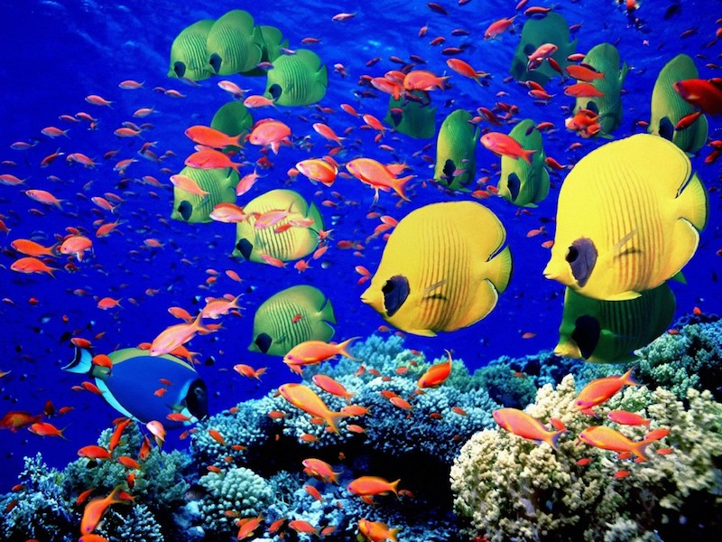

Diving became an interest of mine when my friend introduced it to me in college. At first I was nervous about getting into it. I asked myself, "100 ft below the world that we know, what if something went wrong?" All these concerns faded away once I went though my training and took a trip to Hawaii to do my first real dive. This is the beauty that I saw:

| Hawaii Fish | |
|---|---|
| Type | Identifiers |
| Ornate Butterfly | 6 Orange Stripes |
| Yellow Longnose Butterfly | Snout looks like needle nose pliers |
| Teardrop Butterfly | White/yellow w/ a black teardrop marking on right side |
For pictures of these fish click here!
Should you want to get certified for diving, a large certification body is called PADI is a great way to go!
Warning: diving is a dangerous activity. Don't attempt dives that you have not spent some time planning. Currents and other unexpected things may have an effect on the safety of your dive. Always dive with a partner.When looking at this website and comparing it to mine. The hawaiiscubadiving.com has much more information, and has rotating images on the front page, and a clean layout. I feel mine is a bit basic and still could you some work. However, I feel the hawaiiscubadiving.com is also a little boring and bland. There is so much that can be done with it.